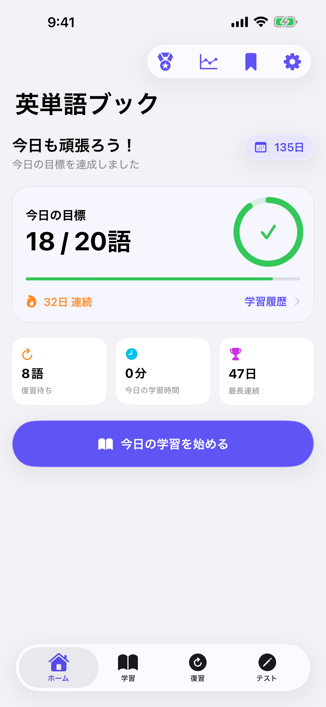
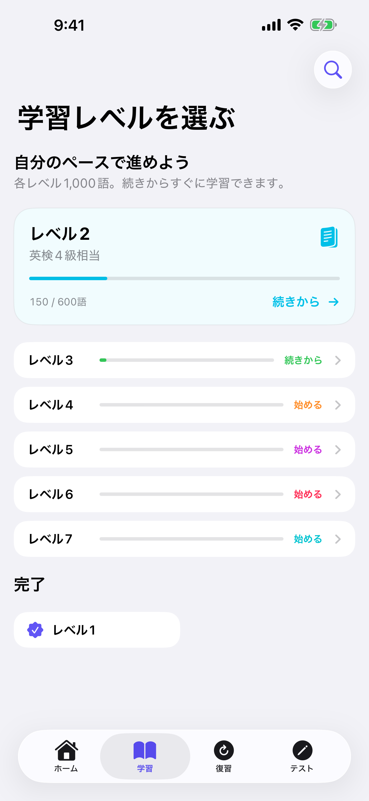
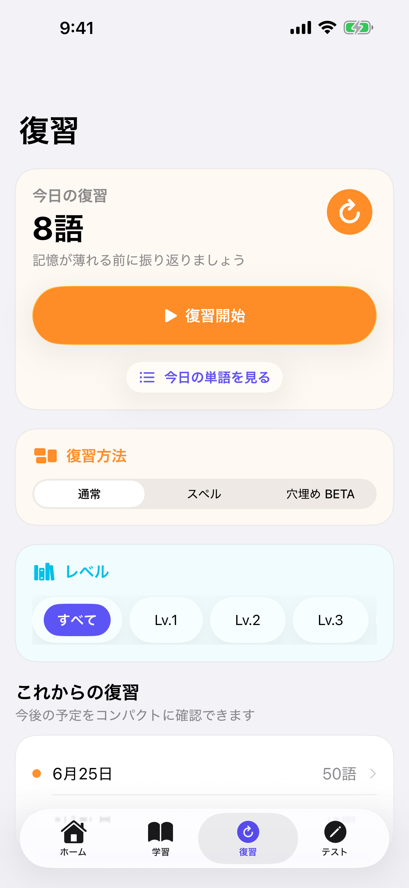
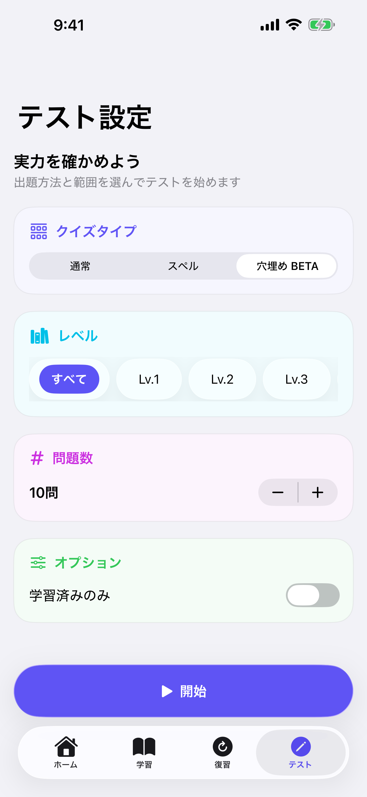
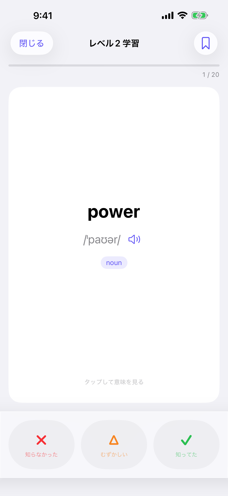
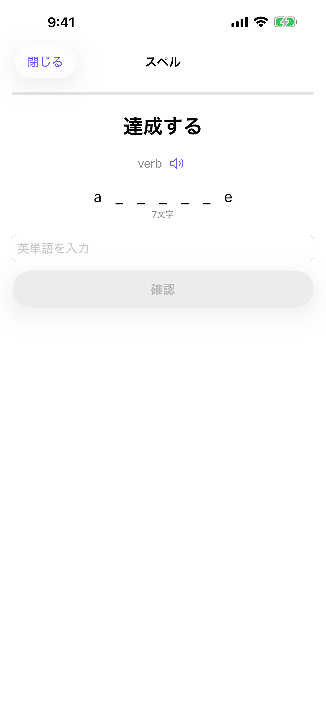

7,000語・7レベル
中1〜高3・上級の7段階で、英検・受験に必要な語彙を完全網羅。
概要
中1〜高3・上級の7段階で、英検・受験に必要な語彙を完全網羅。
科学的なSM-2アルゴリズムが最適な復習タイミングを自動計算。長期記憶への定着をサポートします。
Apple Intelligenceが生成する例文の穴埋めに挑戦。フラッシュカードやテストと合わせて、単語の意味と使い方を自然に身につけられます。
スクリーンショット





